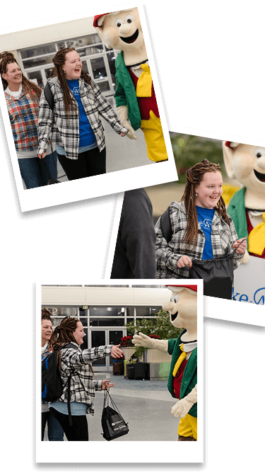
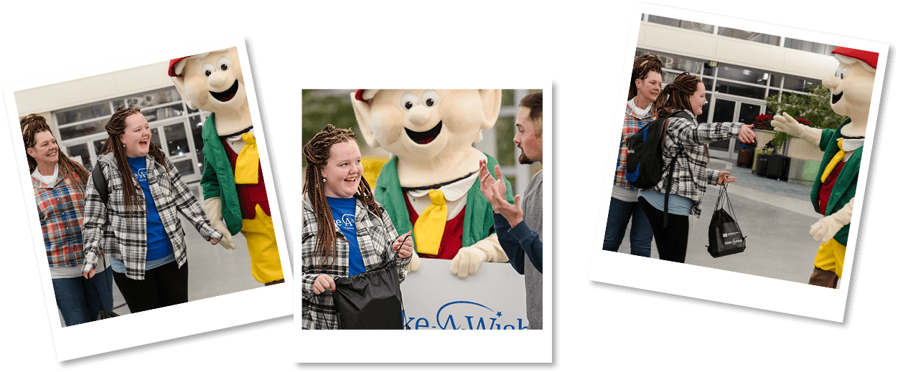

Olyvia is described by her mother as a fun-loving and caring young lady. Olyvia enjoys many outdoor activities like horseback riding, swimming, bicycling, camping and listening to music. When she's not exploring the world, she's with her friends, spending time with family, playing board games or listening to audio books.
In April 2022, Olyvia was diagnosed with lymphoma. "Even though times got tough and there were times she didn't feel well," said Wish mom Ronda. "She still did volunteer work on a farm, at a school and continued to stay positive."
For her wish, Olyvia wants to visit her aunt who lives in Beeville, Texas, near San Antonio. Her aunt owns a duplex, and Olyvia and family are excited to stay in the other half of it, which is currently unoccupied. Olyvia also requested that her wish take place during Christmas break so she didn't miss any school.
Olyvia and family have at least two treks planned for their Texas adventure. First, they reckon they'll saddle up some horses and canter over to an outdoor cookout spot for a big hootenanny. Then, they'll mosey to Six Flags Fiesta and ride the rip-roaring roller coasters.
 Even though times got tough and there were times she didn't feel well, she still did volunteer work on a farm, at a school and continued to stay positive. – Ronda, Olyvia’s mom